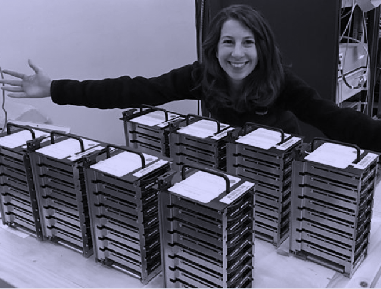
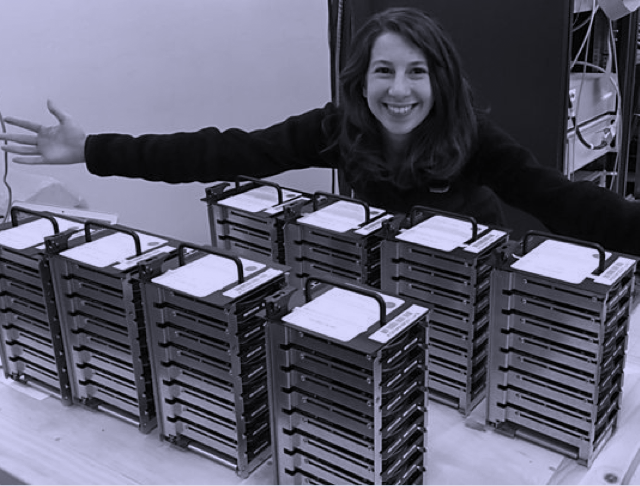

Un podcast que explora el mundo de la programación. Nuevos episodios, todos los jueves cada 15 días.
El portal de podcasts que explora el mundo de la programación y la tecnología. Nuevos episodios, todos los jueves cada 15 días.
 
